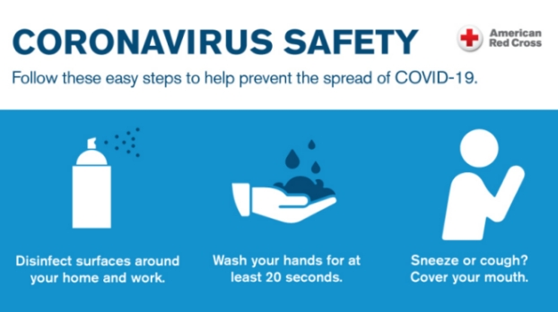

We at TechServ IT Business Services ©, are a small-to-medium IT services provider specializing in IT-related business solutions.
We have been operating from November 2018 and cultivated a modest client base consisiting of both corporates and individuals since. We are proudly South African and 100% black owned, scoring a level 1 contributor B-BBEE status , achieving 135% procurement recognition.
You are free to verify our company details on the CIPC BizPortal.
We are knowledgeable in both Windows and Linux environments and can assist in maintaining your: operating system, networks, anti-virus, encryption, licences and storage (ONAELS). This we can provide to you the client, as a bundled service or as a single-service-agreement (SSA).

Due to COVID-19, we have been made to adapt our business processes and as such; can now support you remotely. We can connect with you using Anydesk, Remote Desktop Tool (RDT) or Chrome Remote Desktop. TechServ IT Business Services © also provides email and telephonic support for our clients with more restrictive internal IT policies.
TechServ IT Business Services ©, also provides e-support (email and telephonic support), for issues relating to smartphone devices (Apple or Android).